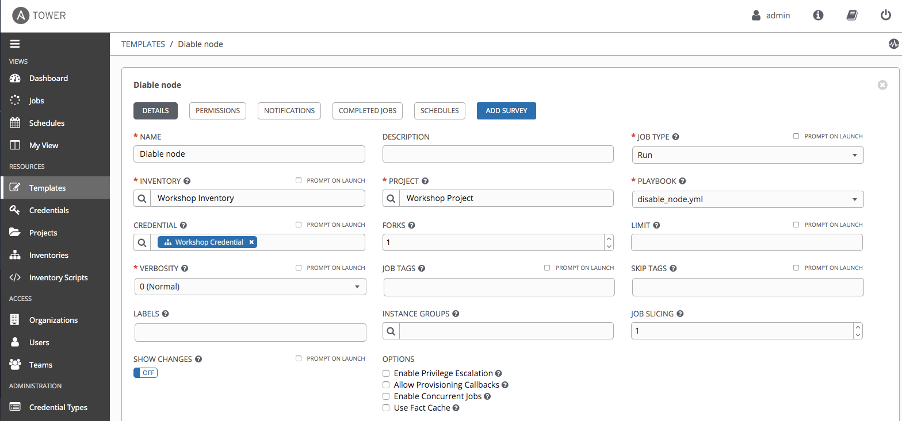
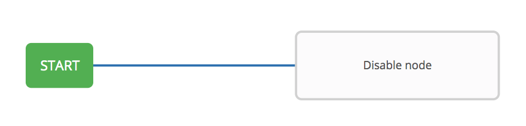
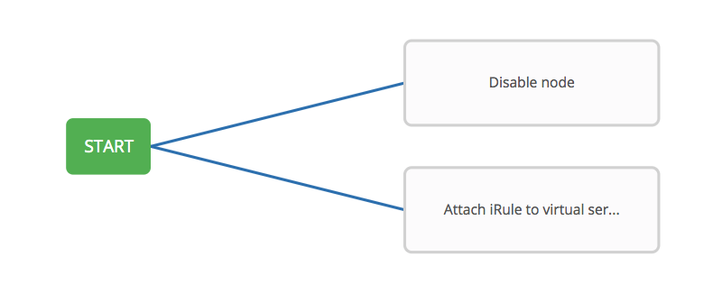
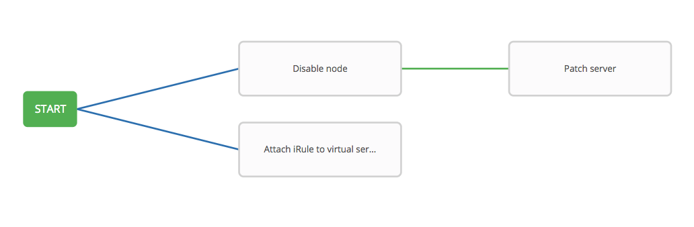
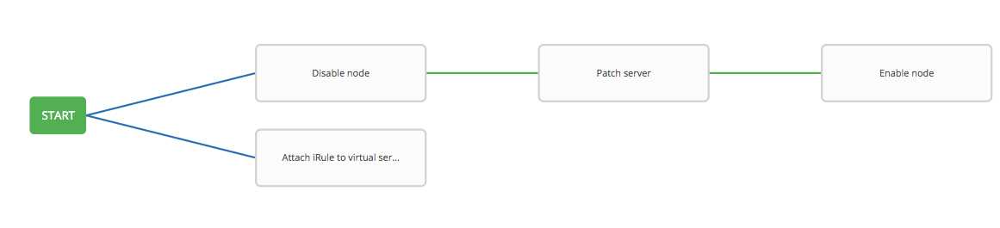
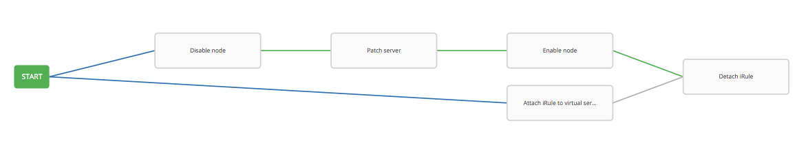
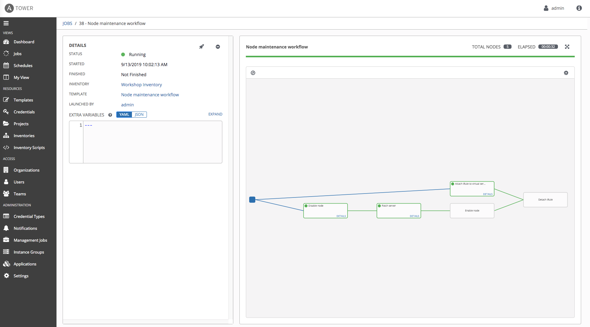
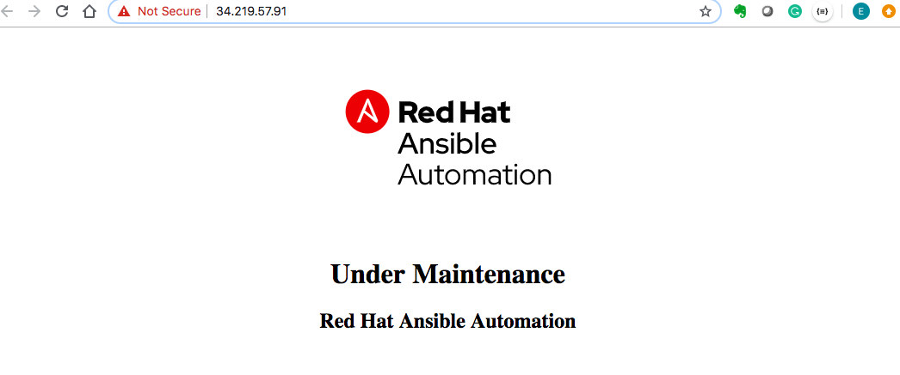

F5 Solutions for Containers > Class 9: Basic BIG-IP Configuration Management with Ansible > Section 4 - Ansible Tower F5 Exercises Source |
Exercise 4.3: Creating Node Maintenance Workflow¶
Objective¶
Demonstrate anothe use case of Ansible Tower workflow for F5 BIG-IP.
For this exercise, we will create a workflow for server patch management, first to disable the pool members, patch the nodes, and then enable the nodes. In parallel, we also attach an iRule to virtual server, to respond to the users when servers are under maintenance.
Guide¶
Step 0: Prepare Job Templates¶
Create Server Credential¶
Before creating templates, you should create one more credential
Server credential beforehand, to be utilized by one of the jobs
(Patch server) to access servers.
| Parameter | Value |
|---|---|
| Name | Server Credential |
| Credential type: | Machine |
For this credential, we use the SSH private key instead. Get the private key from Ansible server, copy the output and paste in the SSH PRIVATE KEY box, and click SAVE.
[student1@ansible ~]$ cat ~/.ssh/aws-private.pem
server credential
Create Job Templates¶
Similar to the previous lab, we would need to prepare the following
templates by following Lab 4.2:
| Job template Name | Playbook |
|---|---|
| Disable node | disable_node.yml |
| Enable node | enable_node.yml |
| Patch server | patch_server.yml |
| Attach iRule to virtual server | attach_irule.yml |
| Detach iRule | detach_irule.yml |
Again, we use the same template parameters as Lab 4.2 for each of
the above templates, except the parameter of CREDENTAUL.
For CREDENTAUL, the Patch server template will use credential
server credential, and all other templates will be using
Workshop Credential
| Parameter | Value |
|---|---|
| Name | |
| Job Type | Run |
| Inventory | Workshop Inventory |
| Project | Workshop Project |
| Playbook | |
| Credential | Workshop Credential |
Here is one example of the templates configured: 
Step 1: Create a Workflow Template¶
- Click on the Templates link on the left menu.
- Click on the green + button. Select the Workflow Template.
- Fill out the the form as follows:
| Parameter | Value |
|---|---|
| Name | Node maintenance workflow |
| Organization | Default |
| Inventory | Workshop Inventory |
- Click on the Save button
workflow creation
Step 2: The Workflow Visualizer¶
- When you click the SAVE, the WORKFLOW VISUALIZER should automatically open. If not click on the blue WORKFLOW VISUALIZER button.
- By default only a green START button will appear. Click on the START button.
- The ADD A TEMPLATE window will appear on the right.
Step 3: Disable node Job Template¶
Select the Disable node Job Template. Use the drop down box to select run. Click the green SELECT button.
Disable node
Step 4: Attach iRule to virtual server Template¶
Click on the START button, again. The ADD A TEMPLATE will appear again.
- Select the Attach iRule to virtual server job template. For the Run parameter select On Success from the drop down menu.
Click the green SELECT button.
attach irule
Step 4: Patch server Template¶
Hover over the Disable node node and click the green + symbol. The ADD A TEMPLATE will appear again.
- Select the Patch server job template. For the Run parameter select On Success from the drop down menu.
Click the green SELECT button.
upgrade server
Step 5: Enable node Template¶
Hover over the Patch server node and click the green + symbol. The ADD A TEMPLATE will appear again.
- Select the Enable node job template. For the Run parameter select On Success from the drop down menu.
Click the green SELECT button.
enable node
Step 6: Detach iRule Template¶
Hover over the Enable node node and click the green + symbol. The ADD A TEMPLATE will appear again.
- Select the Detach iRule job template. For the Run parameter select On Success from the drop down menu.
Click the green SELECT button.

attach irule
Step 6: Create a converged link¶
Lastly, we create a covergence link, which allows the jobs running in
parallel to converge. In another word, when both jobs finish,
Detach iRule node will trigger.
- Hover over the
Attach iRule to virtual servernode and click the blue chain symbol. - Now, click on the existing
Detach iRule. An ADD LINK window will appear. For the RUN parameter choose Always. 
Step 7: Run the Workflow¶
Return to the Templates window
Click the rocket ship to launch the Node maintenance workflow workflow template.
workflow job launched
At any time during the workflow job you can select an individual job template by clicking on the node to see the status.
With iRule attached to virtual server, user will receive a maintenance page during the server maintenance: 
Takeaways¶
You have - created a workflow template that disables pool memebers, upgrade web servers, and add servers back to the pool - attached iRule to virtual server, and user will get maintenance page during server patch - launched the workflow template and explored the VISUALIZER
Complete¶
You have completed lab exercise 4.3
Click here to return to the Ansible Network Automation Workshop